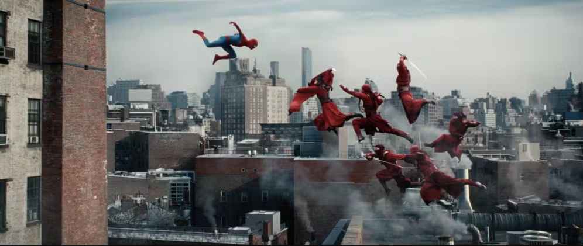
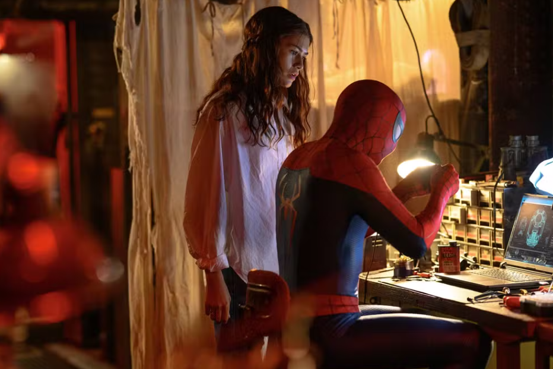
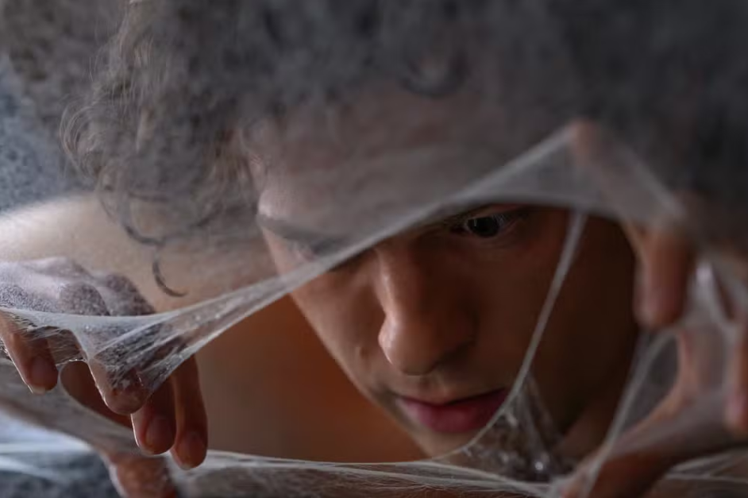

Por Cesar Soto, g1
28/07/2026 18h30
Entre todos os filmes do herói na Marvel, "Homem-Aranha: Um novo dia" só não é melhor que "Sem Volta Para Casa" (2021), mas para muitos fãs dos quadrinhos pode até superar.
O novo filme aposta em uma aventura mais pé no chão, deixando de lado grandes ameaças cósmicas e focando em uma história mais humana e emocional.

Em "Um novo dia", Peter Parker tenta superar a solidão depois de usar um encantamento que fez o mundo inteiro esquecer sua existência.
Agora, ele se dedica ao trabalho como o herói Amigão da Vizinhança de Nova York, enquanto enfrenta uma nova ameaça capaz de controlar pessoas.
Além disso, Peter precisa lidar com mudanças estranhas em seu corpo e em seus poderes.
Tom Holland continua sendo um dos grandes pontos positivos do filme, equilibrando humor, carisma e o lado emocional do personagem.
Zendaya também ganha mais destaque na história, trazendo uma MJ mais complexa do que apenas a namorada do herói.
Sadie Sink, conhecida por "Stranger Things", também chama atenção como uma das grandes novidades do elenco.

O diretor Destin Daniel Cretton assume o comando do filme após a trilogia anterior dirigida por Jon Watts.
O cineasta utiliza sua experiência em cenas de ação para explorar melhor os poderes do Homem-Aranha, colocando o público próximo dos movimentos do herói pelos prédios de Nova York.

O filme também recupera um dos elementos mais importantes dos quadrinhos: a presença de Nova York como parte da identidade do personagem.
"Homem-Aranha: Um novo dia" apresenta uma versão mais madura do herói, mantendo o humor clássico do personagem e aproximando Peter Parker das suas origens nos quadrinhos.